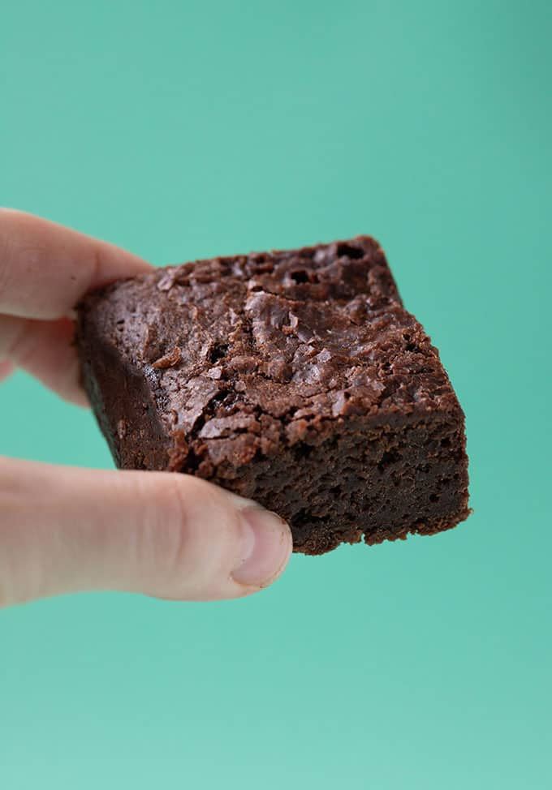

Vegan Brownie

Description
The perfect desert for the sweet-toothed vegan. Low-effort, easy and absolutely delicious.
This recipe serves 4.
Ingredients
- 2x cups Flour
- 2x cups White Sugar
- 3/4 cups Cocoa Powder
- 1x tsp Baking Powder
- 1x tsp Salt
- 1x cup Water
- Vegan Butter
- 1x cup Vegetable Oil
- 1x tsp Vanilla Extract
Steps
- Preheat the oven to 180ºC.
- Grease the baking sheet with butter.
- Drop the flour, cocoa powder, white sugar, salt and baking powder into a mixing bowl.
- Stir the mixture until well mixed.
- Pour the water, vanilla extract and vegetable oil into the mixture and mix well.
- Spread evenly onto the baking sheet.
- Bake for 25 to 30 minutes until the top is matte.
- Cool for at least 10 minutes before cutting.
Main Menu